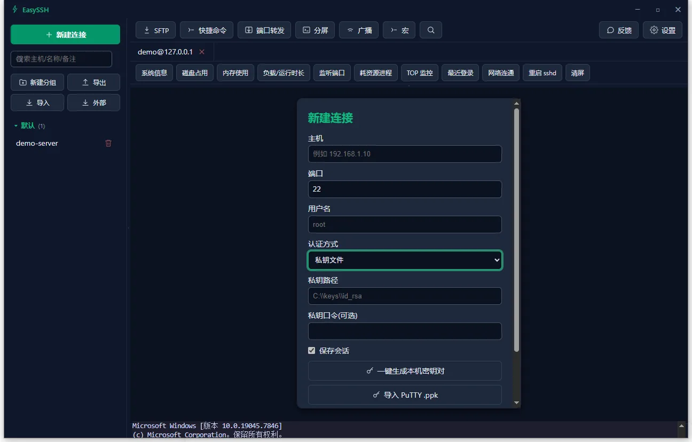

一键生成本机密钥对
功能入口
连接表单认证方式选择「私钥」后，密钥区的「一键生成本机密钥对」按钮。
参数说明
- 算法：Ed25519（默认）/ RSA
- 输出位置：exe 同目录 keys/ 下，私钥 + .pub 公钥
- 格式：标准 OpenSSH 格式（旧 PKCS#8 私钥连接时自动转换）
典型用法
- 第 1 步：点击生成，得到本机密钥对（keys/ 目录）；
- 第 2 步：方式一：复制界面显示的公钥内容，追加到服务器 ~/.ssh/authorized_keys；
- 第 3 步：方式二：在已用密码连接的会话中点「安装到当前已连服务器」，自动写入并设置 700/600 权限；
- 第 4 步：之后连接该服务器认证方式选「私钥」即可免密登录。
界面示意
